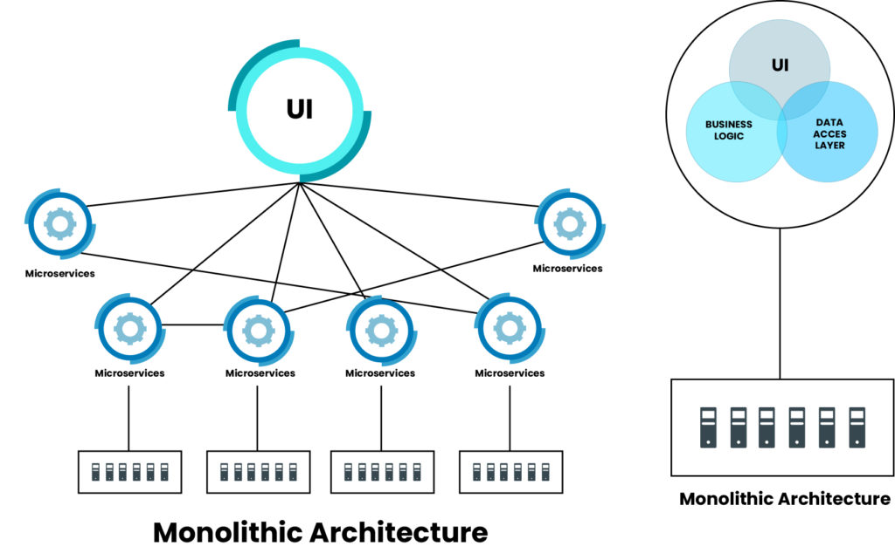
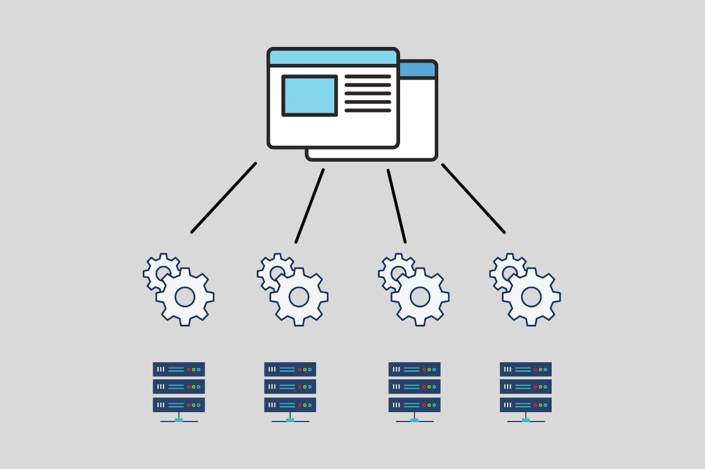
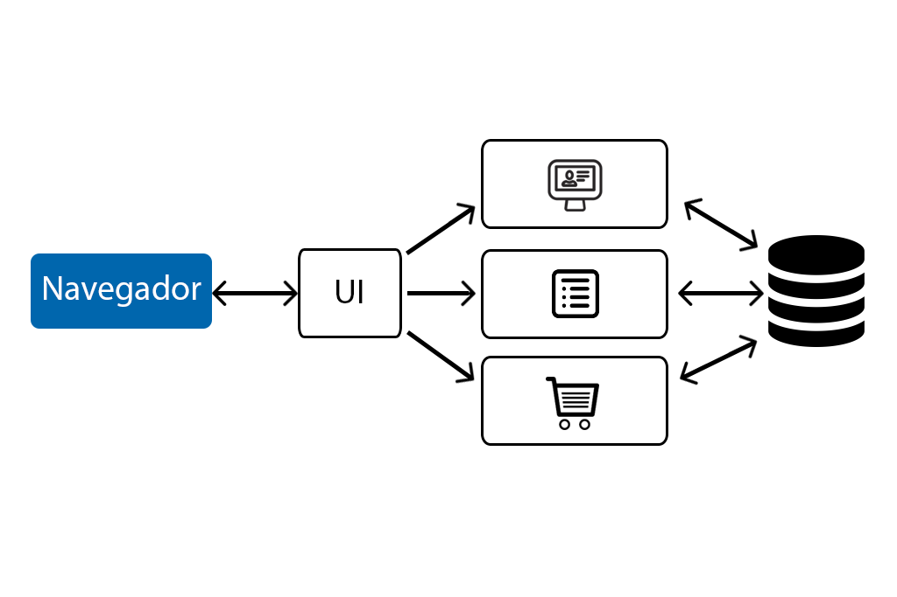

Los microservicios representan un paradigma arquitectónico para el desarrollo de software que ha ganado popularidad en los últimos años. En contraste con las aplicaciones monolíticas, que se implementan como una sola entidad, los microservicios dividen una aplicación en una serie de servicios más pequeños e independientes, cada uno enfocado en una tarea específica.
Cada microservicio se enfoca en una función de negocio o una capacidad técnica particular. Por ejemplo, un microservicio podría manejar la autenticación de usuarios, mientras que otro se encarga del procesamiento de pagos. Estos microservicios son autónomos y se comunican entre sí a través de protocolos estándar como HTTP, REST o mensajes asincrónicos. Esta independencia permite a los equipos de desarrollo trabajar de forma autónoma en cada servicio, lo que acelera el desarrollo y despliegue de software.
Los microservicios se basan en varios principios arquitectónicos clave, incluida la descomposición en servicios pequeños, la independencia de despliegue, la descentralización del control y la tolerancia a fallos. Estos principios permiten a las organizaciones construir sistemas más flexibles y escalables, que pueden adaptarse rápidamente a los cambios en los requisitos del negocio y las demandas del mercado.
Los microservicios ofrecen una serie de beneficios significativos en comparación con las aplicaciones monolíticas. Por ejemplo, permiten escalar partes específicas de una aplicación de forma independiente, lo que mejora la eficiencia y reduce los costos de infraestructura. Además, los microservicios facilitan la adopción de nuevas tecnologías y lenguajes de programación, ya que cada servicio puede implementarse con la tecnología más adecuada para su función específica.
A pesar de sus beneficios, los microservicios también plantean desafíos únicos en términos de gestión de la complejidad, coordinación entre servicios, garantía de consistencia de datos y monitoreo y depuración de sistemas distribuidos. La transición a una arquitectura de microservicios puede requerir cambios culturales y organizativos significativos dentro de una organización, así como inversiones adicionales en herramientas y procesos de desarrollo.
Comparados con las aplicaciones monolíticas, los microservicios ofrecen una mayor flexibilidad y agilidad en el desarrollo de software. Mientras que en una aplicación monolítica un cambio en una parte del código puede afectar a toda la aplicación, en un entorno de microservicios, los cambios se limitan al servicio específico en el que se realizan, lo que reduce el riesgo de impacto en otras partes del sistema.
La modularidad inherente de los microservicios facilita la implementación de prácticas de desarrollo ágiles, como la integración continua y la entrega continua (CI/CD). Cada microservicio puede desarrollarse, probarse e implementarse de forma independiente, lo que acelera el ciclo de desarrollo y permite a los equipos responder rápidamente a los cambios en los requisitos del negocio o las demandas del mercado.
Los microservicios también promueven una mayor reutilización de código y funcionalidades. Dado que cada servicio se enfoca en una tarea específica y encapsula su propia lógica de negocio, los servicios pueden ser fácilmente compartidos y reutilizados en múltiples aplicaciones y contextos.
Sin embargo, la adopción de microservicios no está exenta de desafíos. La gestión de la complejidad de un sistema distribuido compuesto por múltiples servicios puede resultar complicada, especialmente en términos de monitoreo, depuración y coordinación entre servicios. Además, la fragmentación de una aplicación en microservicios puede aumentar la latencia de red y la complejidad de la seguridad.
La elección entre una arquitectura monolítica y una basada en microservicios depende en última instancia de las necesidades y objetivos específicos de cada organización. Mientras que las aplicaciones monolíticas pueden ser más adecuadas para proyectos pequeños o equipos con recursos limitados, los microservicios ofrecen una mayor escalabilidad, flexibilidad y agilidad para proyectos grandes o empresas en crecimiento.
En resumen, los microservicios representan una forma moderna y flexible de diseñar y desarrollar aplicaciones de software. Al descomponer una aplicación en servicios más pequeños e independientes, los microservicios permiten a las organizaciones construir sistemas más flexibles, escalables y fáciles de mantener, que pueden adaptarse rápidamente a los cambios en el mercado y los requisitos del negocio.
Una de las ventajas clave de los microservicios es su capacidad para escalar de manera independiente. En una arquitectura monolítica, si una parte de la aplicación experimenta un aumento repentino en la demanda, toda la aplicación debe escalar horizontalmente para manejar la carga adicional. Esto puede ser costoso en términos de recursos y complejidad operativa.
Con los microservicios, cada servicio puede escalar de forma independiente según sea necesario. Esto permite una asignación más eficiente de recursos y una mejor gestión de la carga. Los servicios que experimentan un alto volumen de tráfico pueden escalar horizontalmente para manejar la demanda, mientras que los servicios menos utilizados pueden permanecer en una escala más pequeña para conservar recursos.
Otra ventaja importante de los microservicios es su capacidad para facilitar la adopción de tecnologías emergentes y la experimentación con nuevas herramientas y enfoques. Dado que cada servicio es independiente, los equipos de desarrollo pueden probar nuevas tecnologías en un servicio específico sin afectar al resto del sistema. Esto fomenta la innovación y permite a las organizaciones mantenerse al día con los avances tecnológicos.
Sin embargo, la adopción de microservicios también conlleva desafíos significativos en términos de diseño, implementación y operación. La gestión de la complejidad de un sistema distribuido compuesto por múltiples servicios puede resultar complicada, especialmente en lo que respecta a la coordinación entre servicios, la gestión de transacciones distribuidas y la garantía de la coherencia de los datos.
Además, la fragmentación de una aplicación en microservicios puede introducir nuevos puntos de fallo y aumentar la superficie de ataque para posibles vulnerabilidades de seguridad. La seguridad en un entorno de microservicios requiere un enfoque cuidadoso, que incluya prácticas como el cifrado de datos, la autenticación y la autorización robustas, y la implementación de medidas de seguridad en capas en todo el sistema.
En resumen, si bien los microservicios ofrecen una serie de ventajas en términos de flexibilidad, escalabilidad y capacidad para adoptar tecnologías emergentes, también presentan desafíos significativos en términos de complejidad y seguridad. La adopción exitosa de microservicios requiere un enfoque cuidadoso y una comprensión profunda de los principios y prácticas asociadas con esta arquitectura.
Los microservicios se han convertido en una opción popular para diseñar y desarrollar aplicaciones en una amplia variedad de dominios. Su arquitectura modular y distribuida ofrece numerosos beneficios en términos de escalabilidad, flexibilidad y mantenibilidad. Para comprender mejor cómo funcionan los microservicios en la práctica, veamos algunos ejemplos de su aplicación en diferentes contextos.
1. E-commerce: En el ámbito del comercio electrónico, los microservicios se utilizan para construir plataformas escalables y personalizables. Por ejemplo, un servicio puede encargarse del catálogo de productos, otro de la gestión de pedidos, otro de la autenticación de usuarios, y así sucesivamente. Esta modularidad permite a las empresas adaptar rápidamente sus sistemas a las cambiantes demandas del mercado y escalar partes específicas de la aplicación según sea necesario.
2. Plataformas de medios: En plataformas de streaming de video o música, los microservicios se utilizan para gestionar funciones como la reproducción de contenido, la recomendación de videos o canciones, la gestión de perfiles de usuario, etc. Cada microservicio puede estar optimizado para manejar una carga específica de trabajo, lo que garantiza una experiencia fluida para los usuarios incluso en momentos de alta demanda.
3. Aplicaciones de viajes: En aplicaciones de reservas de viajes, como Airbnb o Booking.com, los microservicios se utilizan para gestionar la búsqueda de alojamientos, la reserva de habitaciones, la gestión de pagos, la generación de reseñas, entre otras funcionalidades. Esta modularidad permite a las plataformas ofrecer una amplia gama de servicios mientras se mantiene la escalabilidad y el rendimiento.
4. Aplicaciones financieras: En el sector financiero, los microservicios se utilizan para construir sistemas de banca en línea, aplicaciones de gestión de carteras, plataformas de pago, etc. Cada servicio puede estar diseñado para cumplir con regulaciones específicas, garantizar la seguridad de las transacciones y ofrecer una experiencia de usuario intuitiva y segura.
5. Aplicaciones de salud: En el campo de la salud, los microservicios se utilizan para construir sistemas de gestión de registros médicos electrónicos, aplicaciones de telemedicina, plataformas de seguimiento de pacientes, etc. Esta modularidad permite a los proveedores de atención médica adaptar los sistemas a las necesidades específicas de cada paciente y garantizar la privacidad y seguridad de los datos de salud.
En resumen, los microservicios ofrecen una forma flexible y escalable de diseñar y desarrollar aplicaciones en una variedad de dominios. Su enfoque modular permite a las empresas adaptarse rápidamente a las cambiantes demandas del mercado, escalar partes específicas de la aplicación según sea necesario y ofrecer una experiencia de usuario consistente y de alta calidad.
{kind=link}